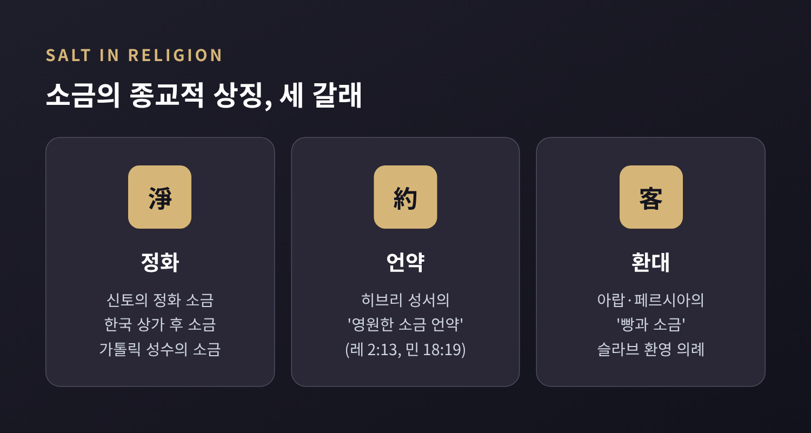
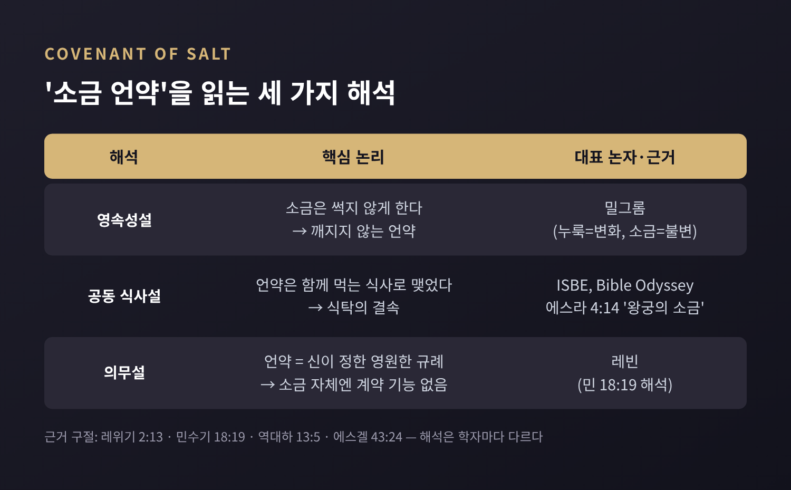
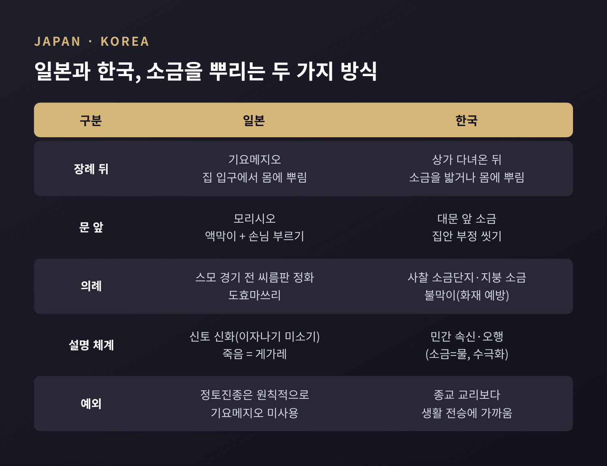
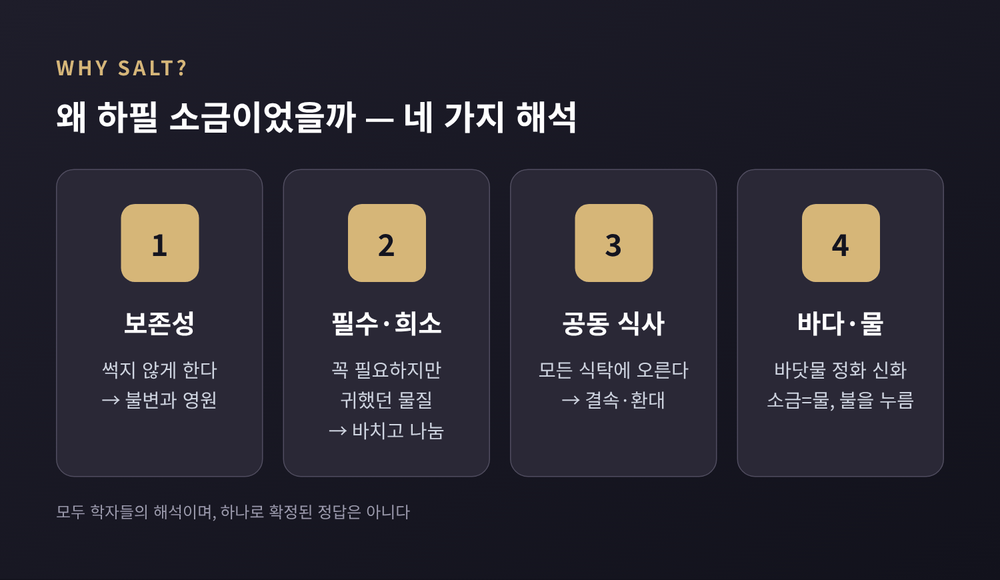

소금의 종교학 — 소금은 왜 정화와 언약, 환대의 상징이 되었을까
오늘은 소금이 여러 종교와 민속에서 어떤 상징으로 쓰여 왔는지 살펴보려 합니다. 특정 신앙의 옳고 그름을 따지는 글이 아니라, 비교종교학의 눈으로 같은 물질이 서로 다른 전통에서 어떻게 읽혔는지 나란히 놓아 보는 글입니다.
먼저 요점부터 정리하겠습니다.
- 소금의 종교적 쓰임은 크게 정화, 언약(계약), 환대라는 세 갈래로 묶입니다.
- 히브리 성서의 '소금 언약', 일본 신토의 정화 소금, 아랍권의 '빵과 소금'은 서로 다른 문화에서 나왔지만 겹치는 부분이 많습니다.
- "소금이 썩지 않아서 영원을 뜻하게 되었다" 같은 설명은 유력한 해석일 뿐, 하나로 확정된 정답은 아닙니다.

■ 제물에 빠질 수 없던 소금 — 히브리 성서의 '소금 언약'
출발점은 레위기 2장 13절입니다. 모든 곡식 제물에 소금을 치고, "언약의 소금"을 빼지 말라는 규정이 나옵니다. 랍비 셰나 챈들러 리언은 이 한 절의 히브리어 원문에 '소금(멜라흐)'과 '소금 치다'라는 말이 네 번이나 등장한다는 점을 짚습니다. 그만큼 강조된 규정이라는 뜻입니다.
'소금 언약'이라는 표현은 다른 곳에도 나옵니다. 민수기 18장 19절은 제사장 몫의 예물을 "영원한 소금 언약"이라 부릅니다. 역대하 13장 5절은 다윗 왕조가 "소금 언약"으로 세워졌다고 말합니다. 에스겔 43장 24절에는 제사장이 번제물에 소금을 뿌리는 장면이 있습니다.
소금이 늘 좋은 뜻만 가진 것은 아닙니다. 사사기 9장 45절에서는 정복한 땅에 소금을 뿌려 불모지로 만듭니다. 반대로 열왕기하 2장에서는 예언자 엘리사가 소금으로 나쁜 샘물을 고칩니다. 같은 소금이 생명과 황폐를 동시에 상징한 셈입니다.
그렇다면 '소금 언약'은 정확히 무슨 뜻일까요. 학자들의 답은 하나로 모이지 않습니다.
- 영속성설: 소금은 음식을 썩지 않게 하므로 깨지지 않는 언약을 뜻한다. 성서학자 제이컵 밀그롬은 변화를 일으키는 누룩과 변하지 않게 하는 소금을 대비시킵니다.
- 공동 식사설: 고대에는 언약을 맺을 때 함께 식사를 했고, 그 식탁에 소금이 있었다. 함께 먹은 사이라는 결속이 핵심이라는 해석입니다.
- 의무설: 바루크 레빈은 여기서 '언약'을 신이 정한 구속력 있는 의무로 읽습니다. 제물에 소금을 치는 일이 영원한 의무라는 뜻일 뿐, 소금 자체에 계약의 기능은 없다는 입장입니다.

흥미로운 방증도 있습니다. 에스라 4장 14절에서 페르시아 관리들은 왕에 대한 충성을 "왕궁의 소금을 먹었다"고 표현합니다. 소금을 나눠 먹은 관계가 곧 충성의 관계로 이해되었다는 뜻입니다.
이 감각은 오늘날 유대교에도 남아 있습니다. 기원후 70년 제2성전이 무너진 뒤, 가정의 식탁이 제단을 대신한다는 관념이 자리 잡았습니다. 그래서 안식일 식사에서 할라 빵을 축복하기 전에 소금에 찍어 먹는 관습이 이어집니다.
■ '세상의 소금'은 무엇을 뜻했을까 — 신약의 은유
신약에서 가장 유명한 구절은 마태복음 5장 13절입니다. "너희는 세상의 소금이니, 소금이 만일 그 맛을 잃으면…"으로 이어지는 말입니다. 마가복음 9장과 누가복음 14장에도 비슷한 말이 있습니다.
이 은유를 두고도 해석이 여러 갈래입니다. 가장 널리 퍼진 읽기는 '보존제'입니다. 제자들이 세상이 썩지 않게 지킨다는 뜻입니다. '땅'을 토양으로 보고 소금을 비료로 읽는 학자도 있지만, 반대 의견이 많습니다. 유대 문헌에서 소금이 지혜를, 율법이 '세상의 소금과 빛'을 뜻했다는 점에 주목하는 해석도 있습니다. 흙 화덕의 연료가 잘 타도록 돕던 소금을 가리킨다는 해석도 제기되었습니다.
"맛을 잃는다"는 표현도 논쟁거리입니다. 사해 주변에서 캔 불순한 소금은 짠 성분이 빗물에 녹아 빠지면 맛없는 흰 가루만 남았다는 설명이 흔합니다. 한편 신약학자 R. T. 프랜스는 이 구절이 화학 강의가 아니라고 말합니다. 일부러 불가능한 상황을 들어 경고한 수사라는 해석입니다. 원어 동사가 '어리석어지다'라는 뜻도 지녀, 소금과 지혜를 잇는 말놀이로 보는 시각도 있습니다.
■ 성수에 녹은 소금, 세례에서 사라진 소금 — 가톨릭 전통
가톨릭에서 소금은 오랫동안 예식 안에 있었습니다. 1913년판 『가톨릭 백과사전』에 따르면 소금은 로마 전례에서만 쓰였습니다. 세례용 소금은 구마(악을 물리치는 기도)와 축복을 거쳐, 세례를 받으러 성당에 들어가기 전의 예비자에게 주어졌습니다. 아우구스티누스가 이 관습을 증언합니다.
중세 그레고리오 성사집에는 사제가 아기 입에 소금을 넣으며 하는 말이 남아 있습니다. "영원한 생명을 위해 지혜의 소금을 받으라(Accipe sal sapientiae)." 여기서 소금은 정화보다 지혜의 상징이었습니다.
예전엔 세례 때 아기의 혀에 소금을 올렸습니다. 지금 가톨릭 세례 예식서에는 그 순서가 없습니다.
미국 링컨 교구 신문의 해설에 따르면, 이 관습은 2차 바티칸 공의회 이후 성사 예식을 간소화하는 개혁 과정에서 빠졌습니다. 새 유아세례 예식서는 1969년 바오로 6세가 공포했습니다. 교회 측 설명은 이렇습니다. 세례의 본질은 물과 삼위일체 양식이고, 소금은 본질이 아닌 상징이었기에 성사 자체는 달라지지 않았다는 것입니다. 참고로 공의회 직전의 1962년판 로마 예식서에는 이 순서가 들어 있었고, 당시에도 생략할 수 있는 요소로 다뤄졌습니다.
성수에 소금을 넣는 관습도 흥미롭습니다. 가톨릭 전례 해설 칼럼(EWTN/ZENIT)에 따르면 현존하는 가장 오래된 소금·물 축복 기도문은 600~751년 메로빙거 왕조 시대 프랑스에서 나왔습니다. 기도문은 엘리사가 소금으로 물을 고친 이야기를 인용합니다. 그러나 같은 글의 필자는 소금이 악령을 쫓는다는 고대 로마의 관념이 뿌리였을 가능성을 제시합니다. 현행 미사경본에서 성수에 소금을 넣는 일은 지역 관습에 맡긴 선택 사항입니다.
■ 문 앞의 소금, 씨름판의 소금 — 일본 신토의 정화
일본에서 소금은 무엇보다 정화의 물질입니다. 고쿠가쿠인대학의 『신토 사전』은 그 뿌리를 이자나기 신화에서 찾습니다. 죽은 자의 나라에서 돌아온 이자나기가 바다에 몸을 담가 부정을 씻었다는 이야기입니다. 사전은 세 가지 생활 관습이 모두 이 '미소기(몸 씻기)'에서 나왔다고 설명합니다. 장례 후 몸에 소금 뿌리기, 아침저녁 문 앞에 물 뿌리기, 음식점 입구의 작은 소금 더미입니다.
그 소금 더미가 모리시오(盛り塩) 입니다. 나쁜 기운을 막는 동시에 손님을 부른다는 두 가지 뜻이 겹쳐 있습니다. 기원으로는 중국 황제의 수레 고사가 자주 거론되지만, 어느 황제였는지조차 자료마다 다릅니다.
스모 선수가 경기 전 씨름판에 소금을 뿌리는 모습도 같은 맥락입니다. 씨름판의 나쁜 기운을 씻고 땅을 성스럽게 한다는 의미로, 신사의 정화 의례와 같은 뜻이라고 설명됩니다. 대회 전에는 '도효마쓰리'라는 의식에서 소금과 쌀, 다시마, 말린 오징어, 술을 씨름판 한가운데 묻습니다. 하루에 뿌리는 소금은 약 45kg이라는 보도도, 약 50kg이라는 보도도 있습니다.
장례에서 돌아온 뒤의 소금은 기요메지오(清め塩) 라 부릅니다. 장례식장에서 받은 작은 소금 봉지를 집 입구에서 몸에 뿌리고 들어가는 방식입니다. 신토에서는 죽음을 '게가레(穢れ, 부정)'로 여겨 왔고, 소금이 그것을 씻는다고 봅니다.
여기서 비교종교학적으로 중요한 장면이 하나 있습니다. 일본 장례의 약 90%는 불교식인데, 불교 종파인 정토진종은 원칙적으로 기요메지오를 쓰지 않습니다. 죽음을 부정으로 보지 않는다는 교리 때문입니다. 같은 사회의 같은 장례 자리에서, 신토적 정화 관념과 불교 교리가 서로 다른 답을 내놓는 셈입니다. 다만 유족이 원하면 소금을 쓰는 승려도 있다고 하니, 현실의 관습은 교리보다 유연합니다.
■ 상갓집 뒤에 뿌리던 소금 — 한국 민속과 사찰의 소금단지
한국에서도 상갓집에 다녀오면 집에 들어가기 전에 소금을 뿌리는 풍습이 있었습니다. 바닥에 뿌린 소금을 밟거나 몸에 직접 뿌려 '부정'을 막는 방식입니다. 이불에 오줌 싼 아이에게 키를 씌워 이웃집에 소금을 얻으러 보내던 풍습도 잘 알려져 있습니다.
이 대목에서 구분이 필요합니다. 이런 관습은 특정 종교의 교리라기보다 민간 신앙·민속에 가깝습니다. 일본의 기요메지오가 신토의 정화 관념과 신화로 설명되는 것과 달리, 한국의 소금 뿌리기는 체계적인 경전보다 생활 속 전승으로 이어져 왔습니다.
한국 소금 민속의 개성은 불막이에서 두드러집니다. 충남과 전북 일부 지역에서는 정월 대보름 무렵 지붕이나 굴뚝에 소금을 뿌렸습니다. 운문사와 해인사 같은 사찰은 소금 단지를 경내에 묻어 화기를 누르는 의례를 이어 왔습니다. 소금은 바닷물이 굳은 것이니 곧 물이고, 물이 불을 이긴다는 오행의 원리를 빌린 것이라는 설명입니다.
국립민속박물관의 2018년 소금 특별전은 소금을 화재막이 상징으로 쓰는 것을 한국에서 두드러진 특징으로 소개했습니다. 불교 사찰에서 행해지지만, 그 논리는 불교 교리보다 민간의 오행 관념에 기대고 있습니다. 종교와 민속이 한 자리에서 겹치는 흥미로운 사례입니다.

■ "우리 사이엔 빵과 소금이 있다" — 아랍·이슬람권의 환대
중동에서 소금은 환대와 의리의 언어입니다. 아랍어권에는 "우리 사이에 빵과 소금이 있다"는 표현이 있습니다. 함께 먹었으니 서로를 배신할 수 없다는 도덕적 유대를 뜻합니다.
1965년 『사우디 아람코 월드』에 실린 글은 베두인의 관습을 이렇게 전합니다. 주인의 환대를 받으면 둘 사이에 '빵과 소금'의 유대가 생기고, 손님은 훗날 주인을 보호할 의무를 집니다. 사막의 환대는 전통적으로 사흘이었고, 원수라도 천막 안에 든 동안은 보호받았습니다. 페르시아 문화에도 손님이 '빵과 소금을 먹었다'는 말로 충성을 표현하는 관념이 있습니다.
이슬람 전승 속 소금은 조금 더 복잡합니다. "식사를 소금으로 시작하고 끝내라, 70가지 병을 고친다"는 말이 예언자의 말로 전해집니다. 수니파 하디스(예언자 언행록) 비평에서는 이 전승을 신뢰하기 어렵다고 봅니다. 중세 학자 이븐 알자우지는 조작된 것이라 판단했습니다. 반면 일부 하나피 법학서는 이를 권장 관행으로 적었고, 시아파 하디스집 『알카피』에는 '소금의 탁월함'이라는 장이 따로 있습니다. 같은 이슬람 안에서도 전승을 평가하는 기준에 따라 위상이 달라지는 것입니다.
남아시아에도 비슷한 언어가 있습니다. '나막 할랄(소금에 충실한)'과 '나막 하람(소금을 배신한)'은 주인과 손님, 군주와 병사 사이의 충성을 가리킵니다. 신화학자 데브두트 파타나이크는 이 표현이 힌두 전통보다 페르시아·아랍·튀르크 문화의 흐름에서 왔다고 봅니다. 힌두교 쪽에서는 금식 기간에 히말라야산 암염을 '순수한 소금'으로 여겨 쓰는 관습이 대표적입니다.
덧붙여 둘 것이 있습니다. 1930년 간디의 '소금 행진'은 종교 의례가 아닙니다. 24일간 약 388km를 걸어 영국의 소금 독점과 소금세에 맞선 정치적 시민불복종이었습니다. 소금이 상징으로 쓰였지만, 그 맥락은 종교사가 아니라 식민지 정치사입니다.
■ 왜 하필 소금이었을까 — 학자들의 해석
여기까지 오면 자연스럽게 묻게 됩니다. 왜 하필 소금이었을까요. 학계의 설명은 몇 갈래로 정리되지만, 모두 해석이라는 점을 먼저 밝혀 둡니다.
첫째, 보존성입니다. 소금은 음식이 썩는 것을 막습니다. 이 성질이 '변하지 않음', '영원함'의 상징으로 옮겨 갔다는 설명입니다. 소금 언약을 영속성으로 읽는 해석과 이어집니다.
둘째, 필수성과 희소성입니다. 성서학자 조너선 슈바이베르트는 채소와 빵 위주의 지중해 식단에서 소금이 꼭 필요하지만 부족한 물질이었고, 기원전 3000년경부터 경제적 상품이었다고 설명합니다. 귀한 것을 바치고 나누는 일이 그 자체로 의미를 가졌다는 것입니다.
셋째, 공동 식사입니다. 소금은 거의 모든 식탁에 오릅니다. 함께 먹는 행위가 결속을 만든다는 점에서, 환대와 언약의 상징이 되기 쉬웠습니다.
넷째, 바다와 물의 연상입니다. 일본의 이자나기 신화는 바닷물 정화와, 한국의 불막이는 '소금=물'이라는 오행 논리와 연결됩니다.

한계도 분명히 적어 두어야 하겠습니다. 흔히 듣는 "로마 병사가 봉급을 소금으로 받아 'salary'가 생겼다"는 이야기는 근거가 약합니다. 'salarium'이 소금(sal)과 관련된 말이라는 기록은 플리니우스에게 있습니다. 그러나 실제로 소금을 봉급으로 줬다는 고대 사료는 확인되지 않는다는 반론이 있습니다. 소금의 상징을 설명할 때도 이처럼 그럴듯한 이야기와 확인된 사실을 구분할 필요가 있습니다.
정리하면 이렇습니다. 소금은 히브리 성서에서는 언약의 표지로, 가톨릭 예식에서는 지혜와 정화의 상징으로, 일본에서는 부정을 씻는 물질로, 아랍권에서는 환대의 증표로 쓰였습니다. 같은 물질이지만 각 전통은 자기 세계관에 맞는 의미를 골라 읽었습니다. 그리고 정토진종처럼, 같은 소금을 의도적으로 쓰지 않는 선택 역시 하나의 종교적 해석입니다.
"한 줌의 소금은 같아도, 그것을 읽는 문법은 전통마다 다르다."
다음에 식탁의 소금을 집어 들 때, 그 작은 결정 하나에 얼마나 많은 사람의 약속과 기도가 얹혀 있었는지 한 번쯤 떠올려 보셔도 좋겠습니다.
참고 자료
- International Standard Bible Encyclopedia, "Covenant of Salt" (1915) — https://www.biblestudytools.com/dictionary/covenant-of-salt
- Jonathan Schwiebert, "Salt", Bible Odyssey — https://www.bibleodyssey.org/passages/related-articles/salt
- JHOM, "A Covenant of Salt" (Milgrom·Levine 해석 소개) — https://www.jhom.com/topics/salt/covenant.htm
- Shana Chandler Leon, J. The Jewish News of Northern California (2026-03-19) — https://jweekly.com/2026/03/19/salt-has-been-an-essential-ingredient-in-our-ritual-life-since-temple-times/
- Wikipedia, "Matthew 5:13" — https://en.wikipedia.org/wiki/Matthew_5:13
- Catholic Encyclopedia (1913), "Salt" — https://www.newadvent.org/cathen/13403b.htm
- McClintock & Strong, "Salt, Ecclesiastical Use of" — https://biblicalcyclopedia.com/S/salt-ecclesiastical-use-of.html
- Southern Nebraska Register, "Salt at baptism" — https://www.lincolndiocese.org/news/diocesan-news/15779-ask-the-register-salt-at-baptism
- Wikipedia, "Blessed salt" — https://en.wikipedia.org/wiki/Blessed_salt
- EWTN/ZENIT, "Blessing of Salt" — https://www.ewtn.com/catholicism/library/blessing-of-salt-4697
- Archdiocese of Oklahoma City, 유아세례 예식서 연표 — https://resources.catholicaoc.org/download/143/childrens-baptism/3606/obc-history-timeline
- Kokugakuin University, Encyclopedia of Shinto, "Misogi" — https://d-museum.kokugakuin.ac.jp/bts/detail/?id=3841
- Wikipedia, "Harae" — https://en.wikipedia.org/wiki/Harae
- All About, 清め塩 해설 — https://allabout.co.jp/gm/gc/67417/
- Japanese Wiki Corpus, "Monto Mono Shirazu" — https://www.japanesewiki.com/Buddhism/Monto%20Mono%20Shirazu.html
- nippon.com, "Funeral Etiquette in Japan" — https://www.nippon.com/en/guide-to-japan/gu020007/funeral-etiquette-in-japan.html
- Hiragana Times, "Sumo as a Sacred Ritual" — https://hiraganatimes.com/highlights/sumo
- 週刊女性PRIME — https://www.jprime.jp/articles/-/5295
- 和楽web — https://intojapanwaraku.com/rock/culture-rock/9972/
- 오마이뉴스, 「소금을 왜 뿌려요? 우리는 집들이 선물로 주는데」(2018) — https://m.ohmynews.com/NWS_Web/Mobile/at_pg.aspx?CNTN_CD=A0002438891
- 한국화재보험협회, 「화재를 예방하기 위한 속신과 신앙행위」 — https://kfpa.or.kr/mem/pdf_file/H/108/H108_7.pdf
- 정연학, 「불의 성격을 지닌 기물을 통한 정화」 — https://kfpa.or.kr/mem/pdf_file/H/126/H126_13.pdf
- Leila Shaheen, "Manners in the Middle East", Saudi Aramco World (1965) — https://archive.aramcoworld.com/issue/196502/manners.in.the.middle.east.htm
- Wikipedia, "Bread and salt" — https://en.wikipedia-on-ipfs.org/wiki/Bread_and_salt
- Hadith Notes, 소금 하디스 분석 — https://hadithnotes.org/an-analysis-of-the-hadith-whoever-begins-his-meals-with-salt-will-be-saved-from-seventy-diseases/
- Thaqalayn, al-Kafi 6권 "Excellence of Salt" — https://thaqalayn.com/chapter/6/5/76
- Devdutt Pattanaik, "Salt to remove the evil eye" — https://devdutt.com/salt-to-remove-the-evil-eye/
- History.com, "Gandhi's Salt March" — https://www.history.com/articles/gandhi-salt-march-india-british-colonial-rule
- Roman Empire Times, "Does the Word 'Salary' Derive from Salt?" — https://romanempiretimes.com/does-the-word-salary-derive-from-salt-what-is-the-connection-with-roman-soldiers